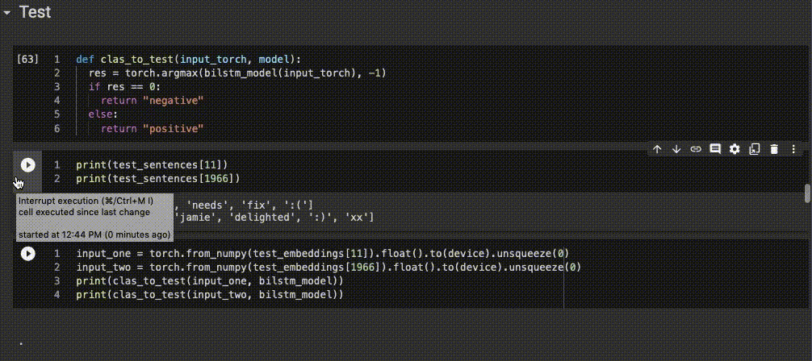

Using data obtained from tens of thousands of Tweets, classify whether each tweet has positive or negative sentiment using various types of bidirectional sequence to sequence models (RNN, LSTM, GRU). What is Sentiment Analysis?
The data was untouched since being extracted from Twitter. Many items were completely removed since I deemed that they held no, or added no, sentiment: the hash was removed from hashtags, numbers, email addresses, stop words, non-emoji punctuation, hyperlinks and Twitter handles were removed. After this general cleaning was done, words were tokenised (including emojis with a library).
FastText with SkipGram was implemented. The pre-trained model was not used, instead the Twitter data (to avoid out-of-vocabulary issue) combined with Ted Talk data (to make embeddings more accurate since Twitter data was limited) was used for training the model. SkipGram was chosen since the paper explains that it can better represent less frequently seen words. Since the Twitter data contains a diverse range of words including less frequently seen slang and swear words, it would likely be more effective than CBOW.
Extrinsic testing resulted in the following embedding parameters: a dimension of 220, a window size of 6 and min count of 2. All other parameters were the default Gensim parameters.
I created bidirectional RNN, bidirectional LSTM and bidirectional GRU models to evaluate each performance and find the differences during parameter tweaks. Unsurprisingly, the biLSTM and biGRU outperformed the biRNN. The biGRU also had a more stable performance than the biLSTM throughout parameter changes. Cross entropy loss and the Adam optimiser were used for all models.